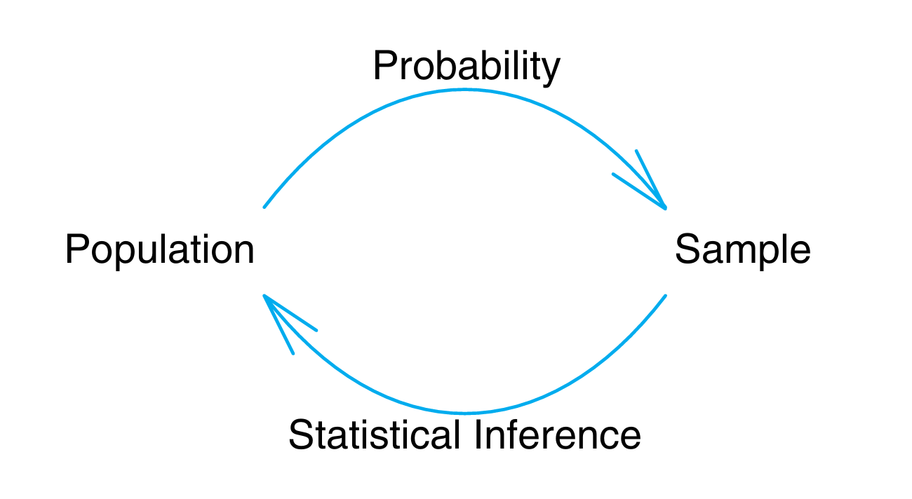

Statistics provides methods for describing data, estimating population characteristics, and evaluating scientific hypotheses under uncertainty.
For example, two people given the same exercise program may improve by different amounts. A person's blood pressure may change from one visit to the next. Two laboratories may obtain slightly different values from the same type of sample. Accounting for this variation is essential to the interpretation of scientific evidence.
This course develops practical statistical analysis skills for biomedical physiology and kinesiology. Students will describe patterns, quantify uncertainty, compare groups, evaluate relationships, and assess whether study designs support the intended conclusions.
1 A Motivating Question
Consider a hypothetical study in which 85% of patients receiving a new drug meet a prespecified blood-pressure control criterion, compared with a historical estimate of approximately 80% for the current treatment. The new drug is more expensive and may cause additional side effects. Should it be adopted?
The observed difference is five percentage points. These percentages alone do not establish treatment superiority, particularly because the comparison uses a historical estimate. Evaluation requires the following information:
- How many patients were studied?
- How were the patients selected and assigned to treatment?
- Was there an appropriate comparison group?
- How much natural patient-to-patient variation was present?
- Could measurement error, bias, or chance explain the observed difference?
- Is the improvement large enough to matter clinically?
- Do the benefits outweigh the costs and harms?
If the study were repeated with a new sample, the observed success rate might be 83%, 80%, or even 75%. Statistical methods quantify sampling uncertainty under explicit assumptions. They do not, by themselves, distinguish a treatment effect from bias or confounding.
This distinction appears throughout biomedical science. A strength-training program may increase average jump height, but would the improvement occur in a new group of athletes? A wearable sensor may agree with a laboratory instrument on average, but is its error small enough for clinical use? A rehabilitation intervention may reduce pain scores, but was the change caused by the intervention or by recovery over time?
2 Populations, Samples, and Data
A population is the complete group about which we want to draw a conclusion. A sample is the smaller group that we actually observe. A variable is a characteristic measured on each individual or experimental unit, such as heart rate, force, treatment group, pain rating, or recovery status.
The population is defined by the research question, not simply by the people who are easy to reach. The observed sample consists of the units for which data are collected. Its relationship to the target population depends on eligibility criteria, recruitment, participation, and missing data.
Example 1: Resting Heart Rate
Suppose researchers want to estimate the average resting heart rate of undergraduate students at a university. They randomly select 120 students and measure each student's resting heart rate.
| Statistical term | Meaning in this study |
|---|---|
| Population | All undergraduate students at the university |
| Sample | The 120 students who were selected and measured |
| Variable | Resting heart rate, measured in beats per minute |
| Parameter | The unknown mean resting heart rate of all undergraduate students |
| Statistic | The mean resting heart rate calculated from the 120 students |
The population mean is a parameter because it describes the entire population. The sample mean is a statistic because it is calculated from the observed sample. Researchers use the calculated sample statistic to estimate the unknown population parameter.
Example 2: A Training Program
A researcher recruits 30 varsity soccer players to study whether a six-week strength program improves vertical jump height.
- If the research question concerns these 30 players only, the 30 players are the population of interest.
- If the goal is to draw conclusions about all varsity soccer players, the 30 participants are a sample from that larger population.
- If the players are recruited from one readily accessible team, they form a convenience sample and may not represent players from other teams, competitive levels, ages, or training backgrounds.
The same group of people can therefore be a population for one research question and a sample for another depending on the research question.
We usually study a sample because measuring an entire population would be infeasible. The challenge is that different samples from the same population will produce different results. A sample mean is therefore an estimate of a population mean, not a perfect copy of it.
Good sampling helps make a sample representative of its target population. In simple random sampling, every possible sample of a given size has the same chance of being selected. Random sampling supports population inference when the sampling frame adequately covers the target population and nonresponse is appropriately addressed. It does not guarantee that a particular sample will closely resemble the population. In practice, convenience samples are common, but they may limit the population to which the findings can reasonably apply.
For each study, we need to answer two related questions:
- Who was sampled? This affects whether the result can be generalized to a broader population.
- How were treatments assigned? This affects whether differences between conditions can be interpreted as causal effects.
Random sampling and random assignment solve different problems. A study can have one without the other.
3 Variability
If every person responded identically, every instrument measured perfectly, and every repeated study produced the same result, statistical methods would rarely be needed. Statistical analysis characterizes observed patterns and the variation that affects their interpretation.
Variation can arise from several sources:
- Biological variability: people differ in anatomy, physiology, behaviour, genetics, training history, and health.
- Measurement variability: instruments have limited precision, assessors make errors, and testing conditions change.
- Sampling variability: a random sample may contain more high or low values simply by chance.
- Experimental variability: adherence, treatment delivery, environmental conditions, and uncontrolled factors may differ.
Statistical reasoning evaluates an estimated effect in relation to its uncertainty. For a fixed study design and sample size, a difference of 5 mmHg is estimated more precisely when measurements have lower variability. Clinical importance must be assessed separately from statistical precision. The size of the effect, the amount of variability, and the number of observations all influence the strength of the evidence.
4 Descriptive and Inferential Statistics
Descriptive statistics summarize the data that were observed. Tables, graphs, means, medians, proportions, ranges, and standard deviations help us see the centre, spread, shape, and unusual features of a dataset.
Inferential statistics go beyond the observed data. They use data and a statistical model to estimate population quantities, evaluate hypotheses, and quantify uncertainty, subject to assumptions about sampling, study design, and the model.
For example, reporting that the average resting heart rate of 40 participants was 67 beats per minute is descriptive. Using those data to estimate the average resting heart rate in a larger population, together with a margin of error, is inferential.
Example: One Dataset, Two Types of Statements
Imagine that 40 students complete a six-week aerobic training program. Their mean maximal oxygen uptake (V̇O₂max) increases from 42 to 45 mL/kg/min.
Descriptive statements report only what was observed in these 40 students:
- The sample contained 40 students.
- Mean V̇O₂max increased by 3 mL/kg/min.
- Thirty-two students improved and eight did not.
- The changes can be displayed with a graph and summarized with a mean and standard deviation.
These statements do not extend beyond the collected data.
Inferential statements use the sample to make a claim about a larger population or process:
- The average improvement among similar students is estimated to be 3 mL/kg/min.
- A confidence interval provides an interval estimate of the population mean change under the assumed model. A method with 95% coverage would produce intervals containing the true parameter in 95% of repeated studies under its assumptions.
- A statistical test evaluates the observed mean change against a null hypothesis of zero population mean change, using the assumed distribution of paired differences.
- Generalization to the target population depends on how the students were sampled. Without an appropriate comparison condition, the mean change cannot be attributed solely to the training program.
| Question | Descriptive or inferential? | Why? |
|---|---|---|
| What was the mean change among the 40 participants? | Descriptive | It summarizes the observed sample. |
| What proportion of the 40 participants improved? | Descriptive | It refers only to collected observations. |
| What is the estimated mean change in the target population? | Inferential | It generalizes from the sample to a population. |
| How compatible are the paired changes with a null hypothesis of zero population mean change? | Inferential | It uses a probability model to evaluate a hypothesis. |
Descriptive statistics summarize the observed sample; inferential statistics use a model to draw conclusions beyond those observations.
Inference quantifies uncertainty under specified assumptions. It does not automatically account for uncertainty arising from bias, measurement problems, or model misspecification.
5 The Role of Probability
Probability connects descriptive statistics to statistical inference. It provides a mathematical model for the outcomes that could occur when a study is repeated under similar conditions.

Probability allows us to ask questions such as:
How can one sample tell us anything about samples we never observed? The observed dataset is only one possible outcome of a study. Probability helps us reason about the outcomes that we did not observe but could plausibly have obtained. This connection between observed data and possible repeated data is the foundation of statistical inference.
Gaussian Distributions and the Central Limit Theorem
One of the most important probability models in statistics is the Gaussian distribution, also called the normal distribution.
The Gaussian (normal) distribution is a symmetric, bell-shaped probability distribution described by its mean and standard deviation. Some statistical models assume that observations or model errors follow this distribution. Such assumptions require evaluation; biomedical measurements are not necessarily normally distributed.
The Central Limit Theorem (CLT) states that, for independent and identically distributed observations with finite mean and finite, positive variance, the standardized sample mean approaches a standard normal distribution as the sample size increases. Thus, a sample mean can have an approximately normal sampling distribution even when the underlying observations are not normally distributed.
The CLT concerns the distribution of sample means across repeated samples, not the distribution of individual observations. The required sample size depends on the population distribution; there is no universal threshold that guarantees an adequate approximation. Dependence and extreme distributions require additional consideration. These ideas are developed further in Week 1.
6 Statistical Hypothesis Tests
A statistical hypothesis test evaluates a specified null hypothesis using a test statistic and its distribution under that hypothesis. The p-value is the probability, assuming the null hypothesis and the other model assumptions hold, of obtaining a test statistic at least as extreme as the observed value, in the direction or directions specified by the alternative hypothesis.
A small p-value indicates incompatibility between the data and the null hypothesis under the assumed model. It does not tell us the probability that the null hypothesis is true, prove that an effect exists, or tell us whether an effect is important.
Sound interpretation combines several pieces of information:
- the estimated effect and its direction;
- the variability in the data;
- the sample size;
- a confidence interval;
- the p-value;
- the practical or clinical importance of the effect; and
- the quality of the study design.
Statistical decisions can be wrong. A Type I error is rejection of a true null hypothesis. A Type II error is failure to reject a false null hypothesis. The significance level, α, specifies a nominal Type I error rate for a valid testing procedure. Statistical power, 1 − β, is the probability of rejecting the null hypothesis for a specified alternative; it depends on effect size, sample size, variability, study design, and α. Failure to reject the null hypothesis does not establish that it is true.
A threshold such as p < 0.05 is a decision rule, not a measure of scientific importance. Statistical significance must be interpreted alongside effect size, uncertainty, study quality, and practical or clinical relevance.
7 The Statistical Investigation Process
A statistical investigation generally follows this iterative process:
- Scientific question. Define the population, variables, and effect of interest.
- Study design. Decide how observations will be sampled, treatments assigned, variables measured, and bias controlled.
- Data collection and inspection. Check data quality and visualize the distribution before applying a model.
- Data summary. Summarize centre, spread, group differences, and relationships.
- Model selection. State the assumptions that connect the data to the scientific question.
- Interpretation. Consider effect size, uncertainty, study limitations, and practical importance.
8 Returning to the Drug Study
Suppose the study enrolled 400 patients, of whom 340 met the prespecified blood-pressure control criterion after receiving the new drug. The observed success proportion is therefore 340 / 400 = 0.85. With the sample size specified, an approximate calculation can assess how unusual this result would be under a success probability of 0.80.
Specify the assumptions and hypothesis
For this calculation, treat 0.80 as a fixed, known benchmark, rather than an estimate with its own sampling uncertainty. Assume that each patient contributes one binary outcome, that outcomes are independent, and that patients share a common success probability. The outcome definition and follow-up period must also be comparable to those used for the benchmark.
Let π denote the population success probability for patients receiving the new drug. Specify the null hypothesis H0: π = 0.80 and the two-sided alternative HA: π ≠ 0.80, with a significance level of α = 0.05 chosen before examining the results. This test evaluates a difference in either direction.
Calculate the standard error and test statistic
Under the null hypothesis, the standard error of the sample proportion describes how much that proportion varies across repeated samples of the same size. For independent binary outcomes, it is calculated as follows:
= √[(0.80 × 0.20) / 400] = 0.02
Here, π0 = 0.80 is the null success probability and n = 400 is the sample size. The standard error is two percentage points. The observed difference of five percentage points is therefore 2.5 standard errors above the null value:
= (0.85 − 0.80) / 0.02 = 2.50
Interpret the approximate result
Under the null hypothesis, the expected numbers of successes and failures are 400 × 0.80 = 320 and 400 × 0.20 = 80. Both are sufficiently large for a normal approximation in this example. A two-sided test at α = 0.05 rejects the null hypothesis when |z| exceeds approximately 1.96. A useful preliminary calculation is therefore to determine whether the observed difference exceeds approximately two standard errors.
Since 2.50 > 1.96, the result is statistically significant at the 5% level. The corresponding two-sided p-value is approximately 0.012, calculated from the two tails of the standard normal distribution beyond −2.50 and 2.50. Under the null hypothesis and the stated assumptions, a test statistic at least this extreme would occur in approximately 1.2% of repeated studies. This is a normal approximation without a continuity correction; an exact binomial test can give a somewhat different p-value.
Examine the role of sample size
If only 100 patients had been studied and 85 had met the criterion, the observed proportion would still be 85%, but the standard error would be larger:
| Observed successes | Null standard error | z | Approximate two-sided p-value | Decision at α = 0.05 |
|---|---|---|---|---|
| 85 / 100 (85%) | 0.04 (4 percentage points) | 1.25 | 0.211 | Do not reject H0 |
| 340 / 400 (85%) | 0.02 (2 percentage points) | 2.50 | 0.012 | Reject H0 |
Increasing the sample size fourfold halves the standard error under this model. The estimated difference remains five percentage points, but it is estimated more precisely. The nonsignificant result with 100 patients does not establish that the population success probability equals 80%.
While a larger sample size successfully refutes the fixed 80% success rate model, statistical rejection does not automatically prove the new drug's clinical superiority
A five-percentage-point improvement may be mathematically significant, but it does not inherently translate into a meaningful benefit for patients. Ultimately, adoption cannot be decided by a p-value alone; it requires a pragmatic evaluation of whether this marginal gain justifies the accompanying surge in costs and adverse side effects.